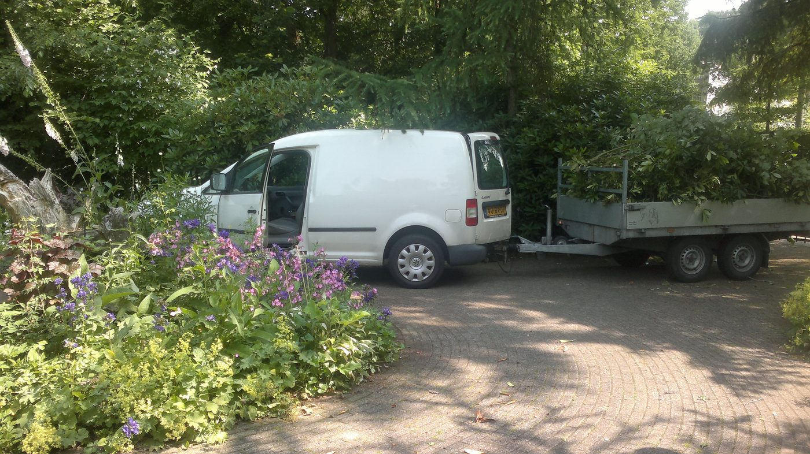
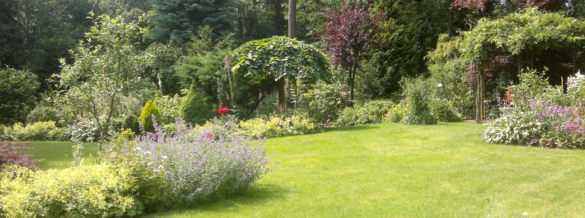
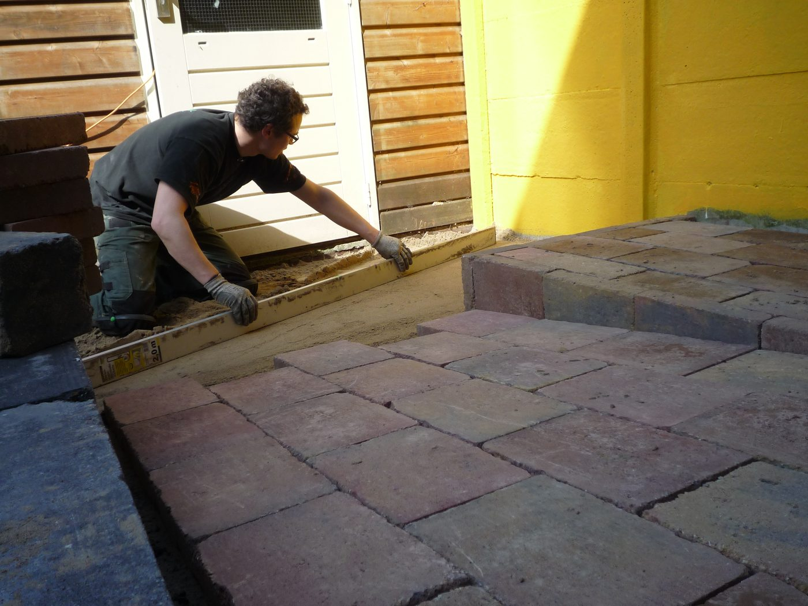
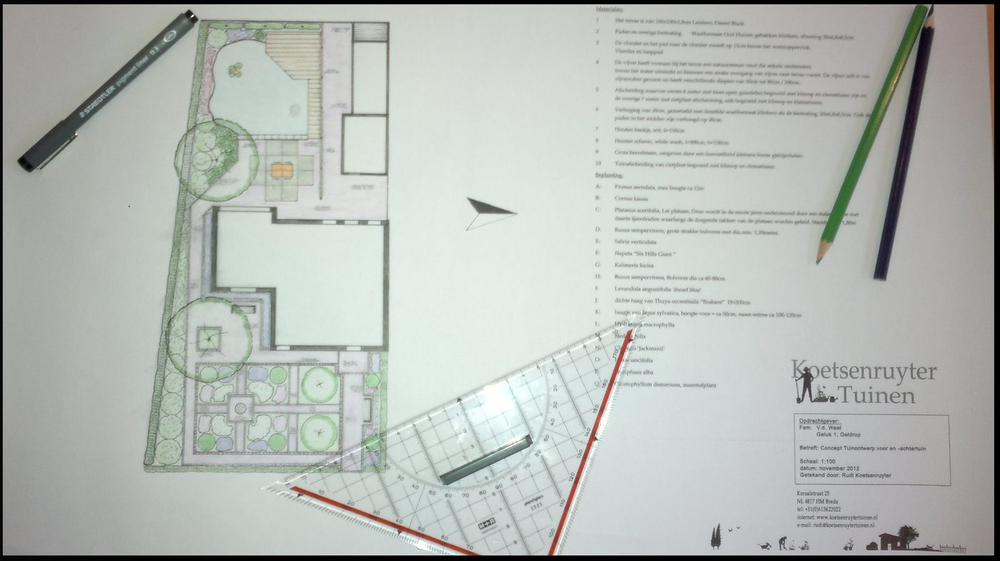
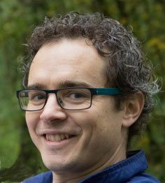

Tuinonderhoud
Snoeien, borders, gazon en onkruid. Maandelijks of 1 à 2 keer per jaar, u bepaalt wat en hoe vaak.
Onderhoud op maatMeer info

Tuinonderhoud, aanleg en ontwerp vanuit Lage Zwaluwe, in de hele regio Breda en Dordrecht. Met persoonlijk contact en betrouwbare afspraken.
Van snoeiwerk en borderonderhoud tot een nieuwe bestrating of een compleet tuinontwerp.

Snoeien, borders, gazon en onkruid. Maandelijks of 1 à 2 keer per jaar, u bepaalt wat en hoe vaak.

Een nieuw terras, pad of oprit, een schutting of een zithoekje achter in de tuin.

Een ontwerp dat helemaal bij u past, met de hand getekend. Het voorgesprek is gratis.
Ook voor: graszoden leggen, schuttingen en poorten, pergola's, verhoogde borders en het onderhoud van bedrijfstuinen.
U bepaalt hoe vaak en wanneer in het jaar we het onderhoud komen doen, en welke werkzaamheden u het liefst uitbesteedt. Van maandelijks tot 1 à 2 keer per jaar.
Een goede eerste indruk maakt u maar één keer. Ook bedrijfstuinen houden we periodiek netjes, zodat u er geen omkijken meer naar heeft.
Een nieuw gazon? We halen het oude gras weg, maken de ondergrond goed en leggen de nieuwe zoden strak neer. De graszoden kunt u ook bij ons kopen.
We gaan eerst uit van uw wensen en voorkeuren, en kijken wat u op korte en langere termijn van uw tuin verwacht. Iedere stijl is bespreekbaar: van modern tot klassiek, van duurzaam tot budgetvriendelijk.

Mijn naam is Rudi Koetsenruyter. Vanuit mijn passie voor de natuur en het buitenleven ben ik met het hoveniersvak in aanraking gekomen. Ik ben vakbekwaam hovenier en neem met veel plezier al uw tuinwerkzaamheden uit handen.
Een klein hoveniersbedrijf, waar klantvriendelijkheid en kwaliteit bovenaan staan. Graag kom ik vrijblijvend bij u langs om uw tuin te bekijken en uw wensen te bespreken.
"Perfect uitgevoerd door Rudi. Hij weet precies wat te doen en werkt netjes. Zeer tevreden."Review op Werkspot · gemiddeld 4,9 / 5 uit 13 reviews
Vertel kort wat u in gedachten heeft. Rudi komt graag vrijblijvend langs om uw tuin te bekijken.
Stuur gerust een appje met een foto van uw tuin, dan reageert Rudi zo snel mogelijk.